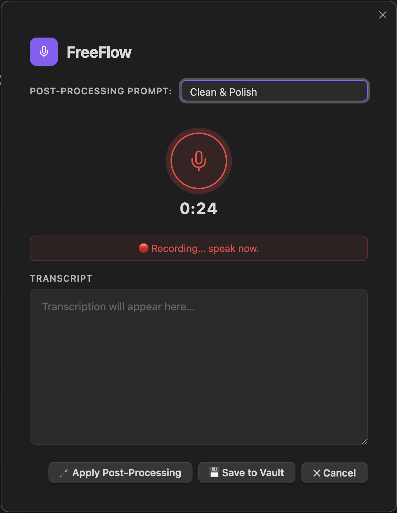

An Obsidian plugin for AI-powered voice dictation. Record your thoughts, transcribe at lightning speed with Groq Whisper, and let an LLM format your notes.

Powered by the Groq API and Whisper Large V3. Your speech is converted to text with sub-second latency, right inside your Obsidian vault.
Never worry about filler words again. Use built-in or custom LLM prompts to synthesize scattered thoughts, extract bullet points, and generate task lists.
Write directly to a new timestamped note, append to today's daily journal, inject at your active cursor, or use multi-burst recording for long thoughts.
FreeFlow uses Groq's insanely fast cloud API for Whisper and Llama models. You'll need to create a free account.
Get free API key →Download the latest `main.js`, `manifest.json`, and `styles.css` from the GitHub releases page into your plugins folder.
git clone https://github.com/sagalpreet/freeflow-obsidian.git
cd freeflow-obsidian
npm install && npm run build
Obsidian App
TypeScript / esbuild
Groq API